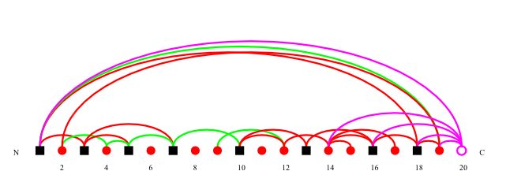
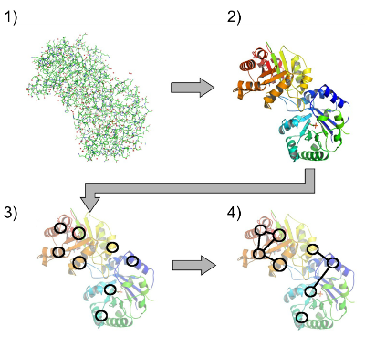
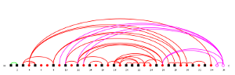
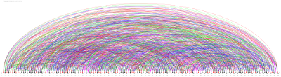

VPLG -- The Visualization of Protein-Ligand Graphs software package
About || Download & License || Documentation || Screenshots || Code & Development || Support || Contact & Citing
About
VPLG uses a graph-based model to describe the structure of proteins on the super-secondary structure level. A protein-ligand graph is computed from the atomic coordinates in a PDB file and the secondary structure assignments of the DSSP algorithm. In this graph, vertices represent secondary structure elements (SSEs, e.g. usually alpha helices and beta sheets) or ligand molecules while the edges model contacts and spatial relations between them.
VPLG is written in Java using the Apache Batik library for SVG output. Database connectivity (optional) is provided by the PostgreSQL JDBC driver. VPLG was tested on Linux and Windows and should also run under MacOS.
|  |
| Graph representation of the alpha-chain of triosephosphate isomerase from PDB entry 7TIM. The alpha helices are shown as red circles and the beta-strands as black squares. Ligands are represented by magenta circles. From left to right, the vertices are ordered by the position of the SSEs they represent in the amino acid sequence (N, N-terminus; C, C-terminus). The arks mark spatial contacts between SSEs (red, parallel; blue, anti-parallel; green, mixed; magenta, ligand contact). Image created with VPLG. |
Download & License
This program is distributed in the hope that it will be useful, but WITHOUT ANY WARRANTY; without even the implied warranty of MERCHANTABILITY or FITNESS FOR A PARTICULAR PURPOSE.
VPLG is licensed under the GNU Public License 2.0.
Also keep in mind that the software is work in progress. You can download different versions, but it is recommended to always use the latest version.
The VPLG software package can be downloaded at our Sourceforge download site.
Documentation
Documentation is included in the release. See the doc/ subdirectoy of your VPLG directory. You can also browse the VPLG documentation online, of course. A quickstart guide and some information on how the program works and the format of the output graph file format is given below.
Quickstart
Here is a quick and basic example on how to use PLCC for PDB entry 3KMF, assuming you have the files 3kmf.pdb and 3kmf.dssp ready and in the PLCC directory:
java -jar plcc.jar 3kmf
This will compute the SSE graphs and write them to image files in the current working directory. You may want to adapt advanced settings, e.g. which graph types to draw and which image format to use, in the config file .plcc_settings (note the dot), which will be created in your home directory the first time you run PLCC.
Note that you can run PLCC without any parameters to get basic help. You can run the following command to access the built-in help:
java -jar plcc.jar --help
How it works
This section roughly explains how VPLG works. See the paper for details.
 |
 |
| Data sources and output of VPLG. The PDB files containing 3D atomic coordinates are downloaded from the RCSB PDB and DSSP is used to assign SSEs to each protein residue. VPLG reads both the PDB and DSSP files and uses them to generate a protein graph file and a bitmap or vector image of the protein graph. Optionally, statistics and the graph can also be written to a database. | Computation of the protein graph from 3D atom data. Contacts are calculated on atom level from the 3D data in a PDB file (1). All residues of the considered protein chain are assigned to SSEs (2), which become the vertices of the protein graph (3). The atom contact information is used to calculate the spatial relationships between the SSEs, represented by edges in the graph (4). |
Screenshots
Some screenshots of VPLG and its output (PNGs generated from SVG files, click to enlarge). More and more recent screenshots are available in the Files section of our Sourceforge website.
|  |  |
 |
| Albelig graph of 8ICD, chain A | Random non-protein graph with 50 vertices | Large random protein graph |
Code & Development
The source code is included in the src/ directory of your VPLG release.
The latest version of the VPLG code is managed in our subversion repository at Sourceforge atm. If you are interested in the
development of VPLG, please contact Tim Schäfer or another member of the team to get write access.
Support
You can use the tickets system or the discussion forums at our Sourceforge website to ask questions, report bugs and security issues, request features etc.
Contact & Citing VPLG
VPLG was written by Tim Schäfer at the Molecular Bioinformatics group of Ina Koch at Goethe-University Frankfurt, Germany. It is based on earlier work by Ina Koch and Patrick May. Contact information is available here.
Information on how to cite VPLG is available here.
About || Download & License || Documentation || Screenshots || Code & Development || Support || Contact & Citing